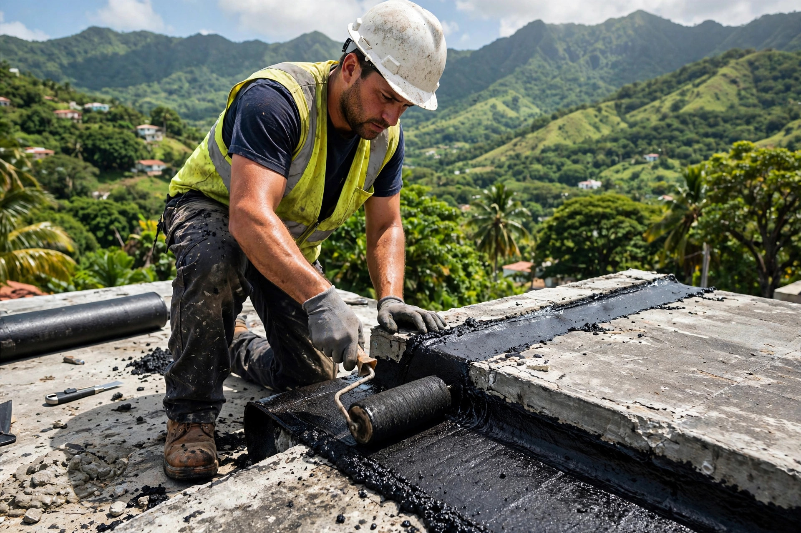
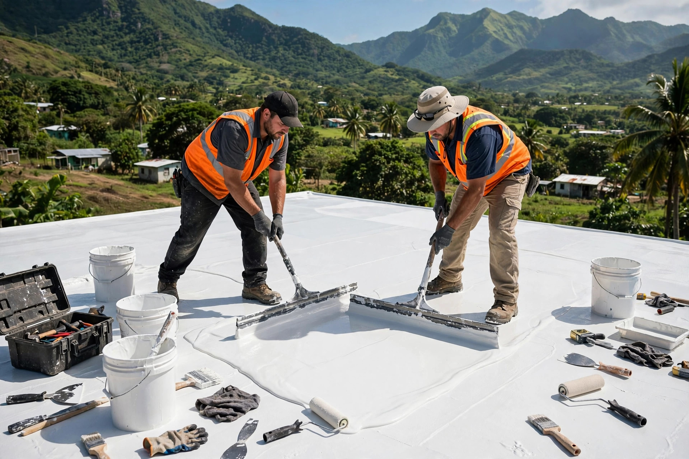

Impermeabilización y sellado de techos en Barranquitas: carpeta asfáltica, silicón y corrección de filtraciones y humedad.


Impermeabilización que aguanta la lluvia fuerte del centro de la isla.
Sellado e impermeabilización en Barranquitas y la zona montañosa.
Barrera total contra el agua para tu techo.
Sistema fuerte para techos exigentes.
Corregimos el origen de la filtración.
Adiós a la humedad en techo y paredes.
Barranquitas y pueblos de la montaña.
Agenda por WhatsApp al 939-263-4528.
De la montaña, para la montaña: sabemos lo que la lluvia le hace a un techo.
Sistemas que aguantan el clima de la montaña.
Trabajamos con material de calidad comprobada.
Equipo que conoce el oficio.
Tu inversión protegida con garantía.
Lo que todo dueño de casa en la montaña pregunta antes de sellar.
Sí. En la montaña llueve más y la humedad es constante, por eso el sellado tiene que ser completo y bien adherido.
Es un sistema de impermeabilización con membrana asfáltica, ideal para techos que necesitan una barrera fuerte contra el agua.
Sí. Evaluamos el techo, corregimos los puntos de filtración y aplicamos el sistema de impermeabilización.
Sí, servimos Barranquitas y la zona montañosa. Llámanos y coordinamos.
Llama o escribe por WhatsApp al 939-263-4528 y agenda tu cotización.
Esta página es una muestra de lo que hacemos. Llevamos tu negocio a internet con oferta de lanzamiento por tiempo limitado.